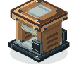
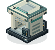
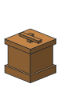
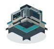
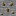

Zinc
Smelts into zinc ingot
A common starting metal. Use it in electric presses, coal mixing smelters, tin production and UV Solution.
Common · Y -32 to 96Dig for new minerals. Turn ingots into parts. Build machines that bring your next project a little closer.
Materials is the production side of ProMod: a growing Minecraft mod about mining, processing and building a workshop of your own. Start with familiar tools and coal, then move into powered presses, mixing smelters and fluid processing.
Minecraft Java 1.21.11 · Fabric · Java 21
Fabric API required · Install on client and server

Start with coal
Upgrade to power
Combine your metals
Add fluid processingEvery mineral has a distinct texture,
a mining range and its own smelted product.
All six minerals appear in the Overworld, in both stone and deepslate. Zinc and lead get your workshop started; deeper or rarer deposits supply the next stages. Mine the ore block, then smelt it in a furnace or blast furnace.
Smelts into zinc ingot
A common starting metal. Use it in electric presses, coal mixing smelters, tin production and UV Solution.
Common · Y -32 to 96Smelts into lead ingot
A common workshop metal used to build the coal press and make tin. It replaces bronze in the current material lineup.
Common · Y -48 to 80Smelts into chromium ingot
The rarest ProMod ore. Smelt it into chromium ingots to collect for future components; further uses are planned.
Rarest · Y -64 to 16Smelts into magnetite ingot
A rare mineral found in a shallow underground band. Its own ingot is used in the electric press and Cleared Silicon.
Rare, shallow deposits · Y -6 to 16Smelts into viner quartz
A white Overworld crystal found in the same shallow band as magnetite. Use it for Cleared Silicon alongside separate Nether quartz.
Rare, shallow deposits · Y -6 to 16
Smelts into tungsten ingot
A deep deposit with gold-like rarity. Smelt it into tungsten, then press the ingots into plates for both mixing smelters.
Gold-like rarity · Y -64 to 0New deposits generate in new chunks. A furnace turns one ore block into one product in 10 seconds; a blast furnace takes 5 seconds. Fortune does not increase these ore drops.
See mining levels, tools and tips →Coal gets you started.
Electricity makes room for more.
Your first way to make tungsten plates. Add a tungsten ingot and coal or charcoal, then collect a plate for your mixing smelter.
The same tungsten plate, five times faster. Connect a compatible power source from another mod and feed the press by hand or hopper.
Combine zinc, lead and copper to make tin. Six input slots give you room for ingredients, with separate slots for the result and fuel.
Make tin faster, or combine four solid ingredients with UV Solution to produce Cleared Silicon. Fill the tank with a bucket or compatible pipes.
Processing times assume 20 TPS. Electric machines need an external compatible generator; Materials does not yet include generators or placeable power cables.
Each step introduces a new way to process materials: cutting, pressing, mixing and working with fluids. These are the production recipes available in the current release.
1 copper ingot + shears → 2 wires. Craft in any arrangement. The shears return with one point of durability used. Wires are ingredients for both presses.
View recipe →1 tungsten ingot → 1 plate. Use either press. Plates are required for both mixing smelters, connecting your first press to the next stage of production.
View recipe →1 zinc + 1 lead + 1 copper ingot → 1 tin ingot. Mix in either smelter without fluid. Tin is made in a machine rather than mined; use it to craft the electric mixing smelter and produce Cleared Silicon.
View recipe →Milk bucket + water bucket + copper ingot + zinc ingot → 1 UV Solution bucket. This shapeless recipe also returns one empty bucket. The violet solution supplies the fluid step for Cleared Silicon.
View recipe →1 Viner Quartz + 1 Nether quartz + 1 tin ingot + 1 magnetite ingot + 1 bucket of UV Solution → 1 Cleared Silicon. Use the electric mixing smelter, placing solids in its input slots and the solution in its tank. This is the current end of the production path; uses in future components are still to come.
View recipe →Collect zinc, lead and wolframite alongside vanilla copper, iron, coal, wood and diamonds. Smelt the new ores into ingots; wolframite becomes tungsten.
Cut copper into wires with shears. Craft your press using wire, lead, coal blocks and planks, then press tungsten into plates.
Use a plate, zinc, a diamond, coal blocks and planks to craft the coal mixing smelter. Add zinc, lead and copper ingots, supply fuel and collect your first tin.
Use tin, plates, iron blocks and diamonds for the electric mixing smelter. Add a compatible power source, find magnetite and Viner Quartz, and craft UV Solution to make Cleared Silicon.
Feed solid ingredients from above and extract finished items from below. Side inputs accept fuel on coal machines and ingredients on electric machines. Machines save their inventory and progress.
Electric machines accept Team Reborn Energy API power from any side. The electric smelter exposes its tank through Fabric Transfer API for compatible pipes and containers. It holds one fluid at a time.
Recipes accept matching, correctly tagged materials from other mods, including ingots, plates and copper wire. Mix plank types in machine craftings. Viner Quartz and Nether quartz remain separate ingredients.
Optional JEI or REI integration shows recipes, machine times, ingredients and fluid requirements. Create Fly has an optional tungsten-plate pressing recipe for this Minecraft version.
Choose compatible Fabric builds for Minecraft 1.21.11. Energy and fluid support depend on the other mod using the same APIs; recipe integration is separate. JEI, REI and Create Fly are optional downloads.
See tested versions and compatibility details →Materials is being built as the resource and production foundation for the wider ProMod series.
You can already mine, craft all four machines, automate their inputs and outputs, make tin and process Cleared Silicon. It works on its own, and can also be installed alongside ProTel.
Future components and phone crafting will build on this foundation. Platinum and silicon ingots are retained for later recipes and are currently Creative-only. Chromium is available to mine and smelt, with further uses planned.
No. The current releases are independent. Materials adds the ores, components and machines; ProTel adds smartphones, SIM cards, SMS, calls and everyday apps.
Yes. Install Materials and Fabric API, then explore new Overworld chunks to find the deposits. Existing terrain is not regenerated. Keep a world backup when updating a development release.
Install the same Materials version and Fabric API on the server and every player’s client. Use Minecraft Java 1.21.11 with Fabric and Java 21.
The material lineup changed in 0.5.0. Lead replaces bronze; wolframite and tungsten replace propylene, with tungsten plates replacing sheets. Older renamed blocks and item stacks migrate when loaded.